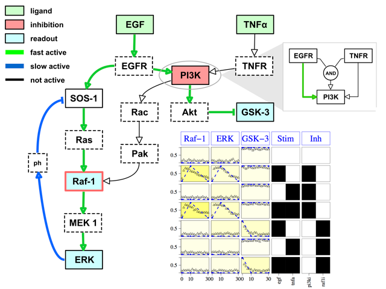
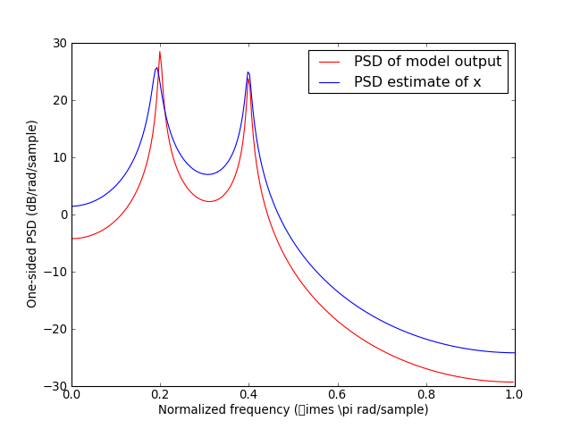

Current/Active developments
BioServices

Bioservices is a Python package that provides access to many Bioinformatices Web Services (e.g., UniProt) and a framework to easily implement Web Services wrappers (based on WSDL/SOAP or REST protocols).
The source code is available on PyPi together with an online documentation.
Rtools
The package rtools provides utilities that are of general usage for developing software that use the RPy2 package. This is not a replacement of RPy2 but rather an addon to simplify the life of developers who are using R packages from Python.
CellNOptR related
CellNOpt (from CellNetOptimizer; a.k.a. CNO) is a software used for creating logic-based models of signal transduction networks using different logic formalisms (Boolean, Fuzzy, or differential equations). CellNOpt uses information on signaling pathways encoded as a Prior Knowledge Network, and trains it against high-throughput biochemical data to create cell-specific models.
Some Previous Developments
OpenAlea/VisuAlea
Openalea project.Spectrum
Spectrum is a Digital Spectral analysis software written in Python. The origin of this library is a C++ library that I wrote during my PhD, which was in C++ only. This former library was mainly based on the book "Digital Spectral analysis" from Marple Lawrence.
I re-engineered this work using Python so as to get rapidly a more robust code with a full set of documentation and tests.
For now, the library contains PSD estimates based on Fourier or Parametric methods. The Fourier methods are correlogram, periodogram and Welch estimates with a bunch of tapering windows from standard (Hann, Hamming, Blackman) to more exotic (DPSS, Taylor, ...). The parametric methods are based upon Yule-Walker and BURG estimates but also more complex such as coriance and modified covariance methods. Other methods based on eigen analysis such as MUSIC method are also implemented. In the close future, Multitapering methods should also be present
Misc
- LAL/LALAPPS: Ligo ALgorithms Library
- Virtual Plants